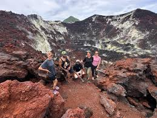
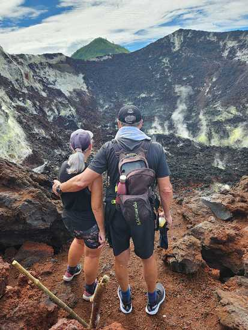

There are moments in life that define your understanding of the world. Standing at the base of Mt. Tavurvur, feeling the ancient earth rumble beneath your feet, watching dramatic plumes of smoke rise against a brilliant blue sky—that is one of those transformative experiences that luxury adventure travelers seek across the globe.
For discerning travelers who demand the extraordinary, Mt. Tavurvur represents the pinnacle of volcano tourism. This active stratovolcano in the spectacular Rabaul caldera offers an exclusive window into the raw power of our planet, accessible through premium guided experiences that combine adventure with uncompromising comfort and safety.
The Rabaul Caldera: A Geological Masterpiece
Mt. Tavurvur is the crown jewel of the Rabaul caldera, a massive volcanic crater that collapsed after a cataclysmic eruption thousands of years ago. This geological wonder has shaped not just the landscape, but the very identity of East New Britain, creating one of the most dramatic natural settings for premium adventure travel in the South Pacific.
The most significant eruption in recent memory occurred on September 19, 1994, when Tavurvur erupted simultaneously with Mt. Vulcan, transforming Rabaul forever. The founder of Bismark Touris witnessed this event firsthand as a young man, and that experience forged a deep respect for the land and a passion for sharing its story with luxury travelers from around the world.
Today, discerning visitors can explore parts of old Rabaul where buildings remain buried up to their rooflines in volcanic ash—a powerful reminder of nature's force and human resilience that adds profound depth to the luxury travel experience.
Your Exclusive Mt. Tavurvur Experience
The journey begins with a private vehicle pickup from your accommodation in Kokopo. As you travel through villages and plantations, your expert guide shares insider knowledge of the region's volcanic history, culture, and the ongoing scientific monitoring that ensures your safety.
At the base, you'll meet your dedicated local guide—a specialist who has spent decades studying this mountain. With generations of family history tied to the volcano, these guides offer unparalleled insight into the cultural significance and geological behavior of Mt. Tavurvur.
"The mountain has a spirit that commands respect," guides explain to visitors. "When you approach with reverence, it reveals its secrets."
The trail to the viewpoint is a moderate 45-minute ascent across terrain that ranges from hardened lava flows to volcanic ash deposits. Throughout the hike, your guide points out steam vents, unique geological formations, and the fascinating flora that has adapted to survive in this extreme environment.
Upon reaching the premier viewing position, you'll be rewarded with an unobstructed panorama of the main crater—a vista that few travelers ever experience and one that defines the pinnacle of volcano tourism.
The Premium Viewing Experience
A low, resonant rumble echoes across the caldera—a sound you feel in your chest before you hear it with your ears. A dramatic plume of steam and gas rises from the crater, drifting upward before catching the wind and dispersing over the Bismarck Sea.
Mt. Tavurvur is one of the most active volcanoes in Papua New Guinea, classified as a stratovolcano built from layers of hardened lava, tephra, and volcanic ash. Its last significant eruption occurred in 2014, but it remains perpetually active—a living, breathing testament to the dynamic forces that shape our planet.
Premium tours allocate one to two hours at the viewpoint, allowing ample time for photography, contemplation, and absorbing the profound experience. Many discerning travelers describe this as the highlight of their global adventures—a moment of genuine connection with the primal forces of nature.
VIP Access: Rabaul Volcanic Observatory
No luxury volcano tour is complete without a visit to the Rabaul Volcanic Observatory. Perched on the slopes of Mt. Vulcan, this facility offers unparalleled views of Tavurvur and the surrounding caldera—photographic opportunities that define premium travel experiences.
Here, scientists monitor volcanic activity around the clock using sophisticated equipment that tracks seismic activity, ground deformation, and gas emissions. Their work is essential for the safety of the 20,000 residents of the Rabaul area and represents the cutting edge of volcanic science.
Visitors gain exclusive access to see seismographs recording real-time data and learn about the fascinating science of volcano monitoring from expert volcanologists—a behind-the-scenes experience that sets premium tours apart.
Luxury Tour Information
Premium Tour Details
Tour Name: Exclusive Mt. Tavurvur Volcano Experience
Location: Rabaul Caldera, East New Britain Province, Papua New Guinea
Duration: 5-6 hours (half-day premium experience)
Best Season: May-October (dry season)
Departure Times: Sunrise (recommended) or custom times for private tours
Inclusions: Private vehicle transport, expert local guide, VIP observatory access, premium photography assistance, bottled water, light refreshments
Group Size: Intimate groups (maximum 6 guests) or exclusive private tours available
Book Your Luxury Volcano Experience
Experience the world's most spectacular active volcano with our premium guided tours. Private and small-group experiences available for discerning travelers seeking the ultimate adventure.
Phone: +675 76769513
WhatsApp: +675 76769513
Email: info@bismarktouris.com
Premium Safety & Excellence Standards
Bismark Touris maintains the highest safety standards for all premium volcano experiences:
- Real-time monitoring – Direct coordination with the Rabaul Volcanic Observatory for current activity updates
- Elite local guides – Decades of experience with intimate knowledge of volcanic behavior
- Premium equipment – High-quality hiking gear and safety equipment provided
- Flexible cancellation – Tours may be rescheduled based on volcanic conditions
- Comprehensive insurance – Full coverage for premium adventure activities

A Transformative Experience Awaits
After years of curating premium volcano experiences, the guides at Bismark Touris have learned that Mt. Tavurvur reveals itself differently each day. Sometimes it presents itself with quiet dignity—a gentle wisp of steam against the horizon. Other days, its power announces itself with deep rumbles audible from miles away. No two visits are identical, which is precisely why discerning travelers return again and again.
This is not merely a tourist attraction—it is a living, sacred landscape that has shaped the identity of East New Britain for millennia. For the people of this region, Tavurvur represents both challenge and gift, destruction and renewal. It has shaped the fertile soil that sustains communities and provided a dramatic backdrop to one of the Pacific's most resilient cultures.
For luxury travelers seeking authentic, transformative experiences, Mt. Tavurvur delivers something increasingly rare in our world: genuine awe, profound connection, and the recognition that some forces will always remain beyond human control.
This is the ultimate volcano adventure—the experience that discerning travelers return home to share, the memory that defines a lifetime of exploration.
Frequently Asked Questions About Premium Volcano Tours
How much does a luxury Mt. Tavurvur volcano tour cost?
Premium private volcano tours to Mt. Tavurvur start from PGK 1,200 per person for exclusive guided experiences, including private transport, expert local guides, and VIP access to the Rabaul Volcanic Observatory. Custom luxury packages are available upon request.
What is the best luxury volcano trek in Papua New Guinea?
The Mt. Tavurvur volcano tour in Rabaul is widely considered the premier luxury volcano trek in Papua New Guinea. With private guides, premium transportation, and exclusive access to the Rabaul caldera, this experience offers the perfect blend of adventure and comfort for discerning travelers.
Can I book a private volcano tour in Rabaul?
Yes, Bismark Touris offers exclusive private volcano tours to Mt. Tavurvur. Private tours include dedicated expert guides, luxury vehicle transport, flexible departure times, and personalized itineraries tailored to your preferences.
When is the best time for volcano trekking in Papua New Guinea?
The optimal season for luxury volcano trekking in Papua New Guinea is during the dry season from May to October. During these months, weather conditions are ideal for hiking Mt. Tavurvur, with clear skies providing spectacular views of the Rabaul caldera.
Is it safe to hike an active volcano with guided tours?
Yes, with professional guides who monitor conditions through the Rabaul Volcanic Observatory. Bismark Touris prioritizes safety with real-time monitoring, expert local knowledge, and comprehensive safety protocols. Tours operate only when conditions are safe.